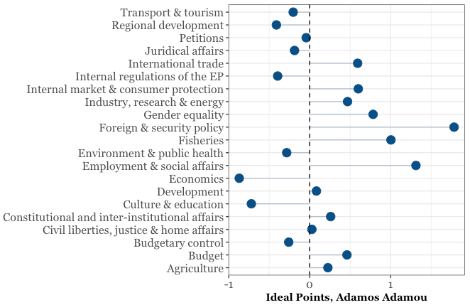
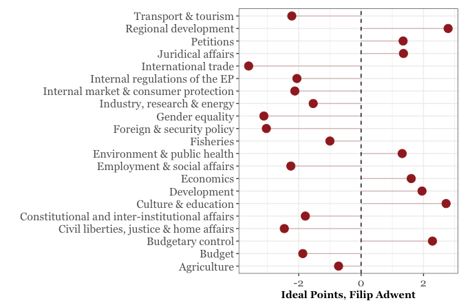
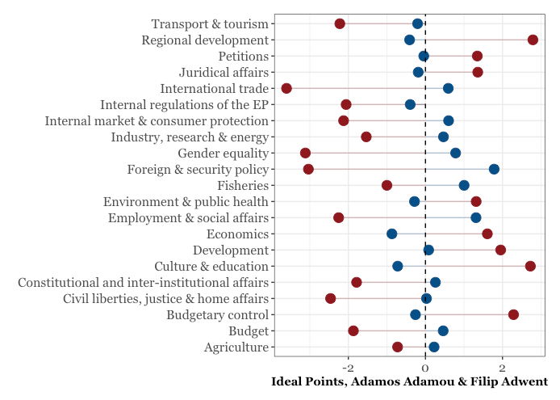

Theme-Specific Voting in the European Parliament
Since it’s European Statistics Day, I thought I would make a quick post showing how to utilise some of the data that we have on the European Union in R. In particular, I will use European Parliament voting data from Simon Hix’s website. The data is freely available, so by copying and pasting the code below, you will be able to recreate the analysis I’ve done here.
We’re going to be using Stan to make theme-specific ideal points for members of the European Parliament. You will need to install Stan and a C++ compiler to replicate the analysis.
First, let’s load the R packages that we’re going to use. If you don’t have any of these, you will need to install them first, using either install.packages("name of package") or by means of the ‘install’ button on the Packages window of the RStudio IDE.
library(data.table)
library(tidyverse)
library(dtplyr)
library(rstan)
library(stringi)After you download the data from Hix’s website, we can import it into R. I will then merge everything together.
rm(list = ls())
eu4 <- as_tibble(fread("~/Downloads/ep6/RCVS2004Full.csv", header=T))
eu5 <- as_tibble(fread("~/Downloads/ep6/RCVS2005Full.csv", header = T))
eu6 <- as_tibble(fread("~/Downloads/ep6/RCVS2006Full.csv", header = T))
eu7 <- as_tibble(fread("~/Downloads/ep6/RCVS2007Full.csv", header = T))
eu8 <- as_tibble(fread("~/Downloads/ep6/RCVS2008Full.csv", header = T))
eu9 <- as_tibble(fread("~/Downloads/ep6/RCVS2009Full.csv", header = T))
eu <- eu4 %>%
full_join(eu5) %>%
full_join(eu6) %>%
full_join(eu7) %>%
full_join(eu8) %>%
full_join(eu9) %>%
select(-V1) %>%
rename(voter = `Vote ID`) %>%
mutate(voter = stri_trans_general(voter, "Latin-ASCII"))
rm(eu4, eu5, eu6, eu7, eu8, eu9)Now we have a data frame of each of the 940 legislators in the database, and their votes on 6200 votes. Next we’ll create some id variables that we will use when we send the data to Stan.
EU <- gather(eu, vote_id, vote, `1`:`6200`) %>%
mutate(vote_id = as.numeric(vote_id),
voter_id = as.numeric(as.factor(voter)))Now we have each voter (the M.E.P., voter), the id of the bill being voted on (vote_id), how the individual voted (vote) and the id of each voter. In these data, 1 is a ‘yes’ vote, while 0 is ‘no’. The full list from Hix’s website contains the following info:
The codes for the MEP vote decisions are as follows:
EP1, EP2 and EP5: 1=Yes, 2=No, 3=Abstain, 4=Present but did not vote, 0=Absent, 5=Not an MEP
EP3 and EP4: 1 = Yes, 2 = No, 3 = Abstain, 4 = Present but did not vote, 0 = either Absent or Not an MEPHix & co. also provide us with information on the specific policy area for each vote. We can import it, tidy it up a little and merge it to the data we have.
theme <- as_tibble(fread("~/Downloads/ep6/vc.csv"))
theme <- theme %>%
rename(vote_id = `Vote Id`) %>%
select(vote_id, Title, `Policy Area`, Result) %>%
rename(topic = `Policy Area`) %>%
mutate(topic_id = as.numeric(as.factor(topic)))
rollcalls <- full_join(EU, theme) %>%
mutate(vote = ifelse(vote==1, 1, ifelse(vote==0, 0, NA))) %>%
filter(!is.na(vote))Next, we need to prepare the data for Stan. Our model is a basic 2-parameter Item-Response theory model often used for creating ideal points. We write this in the Stan modelling language and save it as a string in R. In mathematical notation, the model is:
\[y_{ijk} = \beta_j \theta_{ik} - \alpha_j,\]
where i is an index of voters, j an index of votes, and k an index of topics. \(\theta_{ik}\) is our main object of interest: the ideal point of MEP i on topic k.
For those not familiar with Stan, the following Stan code has a data block, in which we declare what our variables are and their type (these are created in the section after). Then we have a parameters block where we declare our parameters.
Lastly, we have the model block where we have our model and the priors for each parameter. In an IRT model like this, we need to constrain the ideal points of at least 2 legislators. Since I am not an expert on these MEPs, I am just going to do this for the first two in the database (theta[1] and theta[2]).
mep_model <- "
data {
int<lower=1> J; //MEPs
int<lower=1> M; //Proposals
int<lower=1> K; //no. of topics
int<lower=1> N; //no. of observations
vector[K] m0; // prior mean for theta
cov_matrix[K] M0; // prior covar. for theta
int<lower=1, upper=J> j[N]; //MEP for observation n
int<lower=1, upper=M> m[N]; //proposal for observation n
int<lower=1, upper=K> k[N]; //topic for observation n
int<lower=0, upper=1> Y[N]; //vote of observation n
}
parameters {
real alpha[M];
real beta[M];
vector[K] theta[J];
}
model {
beta ~ normal(0, 10);
alpha ~ normal(0, 10);
for (n in 1:N)
Y[n] ~ bernoulli_logit(theta[j[n], k[n]]*beta[m[n]] - alpha[m[n]]);
theta ~ multi_normal(m0, M0);
theta[1,1] ~ normal(1, .01);
theta[2,1] ~ normal(-1, .01);
}"Above, we have variables declared in our Stan model. Here, I define these objects in R. All of this then goes as a list to Stan.
library(rstan)
N <- nrow(rollcalls)
M <- max(rollcalls$vote_id)
K <- max(rollcalls$topic_id)
J <- max(rollcalls$voter_id)
Y <- rollcalls$vote
m <- rollcalls$vote_id
k <- rollcalls$topic_id
j <- rollcalls$voter_id
# Mean and Covariances for theta
m0 <- rep(0, times=K)
M0 <- matrix(0, K, K)
diag(M0) <- 1
stan_data <- list(J=J, N=N, M=M, j=j,
Y=Y, m=m, K=K, k=k,
m0=m0, M0=M0)Next, we run our model with Stan. Here I use Stan’s new ADVI feature, but the Stan folks don’t recommend this for inference. However, for a blog post it’s okay 😊.
ADVI is much faster than the already comparatively fast NUTS sampling that Stan does. Here we have a lot of data, though, so this next part will take a few hours to run. If you don’t fancy waiting so long, subset the data (maybe choose just one year) and run the Stan code on the smaller dataset.
Stan_Model <- stan_model(model_name = "meps", model_code = mep_model)
Res1 <- vb(Stan_Model, data = stan_data, seed = 1234,
init = "random")So one thing that we could do with the estimates from this model is plot the ideal points of an MEP as they vary over the themes that he/she voted on.
What we will do is extract the elements of the summary that we want and then create the summary that we need to start making figures.
summary <- list(summary(Res1, pars="theta"))
summary <- summary[[1]][1]
summary <- as_data_frame(summary[[1]]) %>%
mutate(names = theta_names,
voters = rep(unique(rollcalls$voter), each=21),
index = as.character(str_extract_all(names, "\\.[0-9]*$")),
index = gsub("\\.", "", index),
index = as.integer(index))
topics <- unique(rollcalls$topic)
index <- unique(summary$index)
topic_index <- tibble(topic = topics, index = index)
mep_summary <- full_join(summary, topic_index) %>%
select(-c(names, index))The following graphs are of Adamos Adamou and Filip Adwent, for the simple reason that they are the first names in the database. First, we create a plot for Adamou and then for Adwent, then we combine them. In the following code, I customize the font, but none of that is necessary.
adamou <- mep_summary %>% filter(voters=="ADAMOU, Adamos")
ggplot(adamou, aes(x = mean, y = topic)) +
geom_segment(aes(yend = topic), color = "#104E8B",
xend = 0, alpha = 0.3) +
geom_point(size = 4, color = "#104E8B") + theme_bw() +
theme(legend.position = "none", axis.title.y = element_blank(),
axis.title.x = element_text(family = "Georgia", face='bold'),
axis.text.y = element_text(family = "Georgia", size = 12),
axis.text.x = element_text(family = "Georgia", size = 12)) +
xlab("Ideal Points, Adamos Adamou") +
geom_vline(xintercept = 0, linetype = "dashed")
adwent <- mep_summary %>% filter(voters=="ADWENT, Filip")
ggplot(adwent, aes(x = mean, y = topic)) +
geom_segment(aes(yend = topic), color = "#8B1A1A",
xend = 0, alpha = 0.3) +
geom_point(size = 4, color = "#8B1A1A") + theme_bw() +
theme(legend.position = "none", axis.title.y = element_blank(),
axis.title.x = element_text(family = "Georgia", face='bold'),
axis.text.y = element_text(family = "Georgia", size = 12),
axis.text.x = element_text(family = "Georgia", size = 12)) +
xlab("Ideal Points, Filip Adwent") +
geom_vline(xintercept = 0, linetype = "dashed")
We can put these two together and see how they compare:
ggplot(adamou, aes(x = mean, y = topic)) +
geom_segment(aes(yend = topic), color = "#104E8B",
xend = 0, alpha = 0.3) +
geom_segment(data = adwent, aes(yend = topic),
xend = 0, colour = "#8B1A1A",
alpha = 0.3) +
geom_point(size = 4, color = "#104E8B") + theme_bw() +
theme(legend.position = "none", axis.title.y = element_blank(),
axis.title.x = element_text(family = "Georgia", face='bold'),
axis.text.y = element_text(family = "Georgia", size = 12),
axis.text.x = element_text(family = "Georgia", size = 12)) +
xlab("Ideal Points, Adamos Adamou & Filip Adwent") +
geom_point(data = adwent, aes(x = mean, y =topic),
size = 4, color = "#8B1A1A") +
geom_vline(xintercept = 0, linetype = "dashed")
And of course you can customise these ggplot figures any way you like.
Happy European Statistics Day! 👯